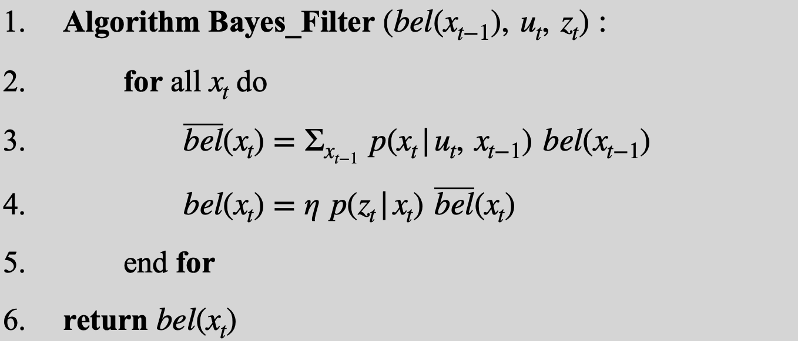
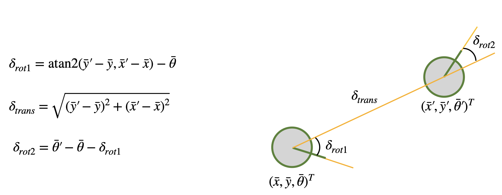
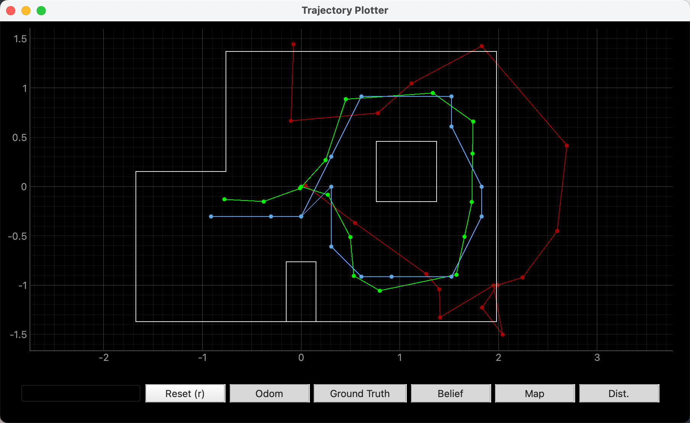
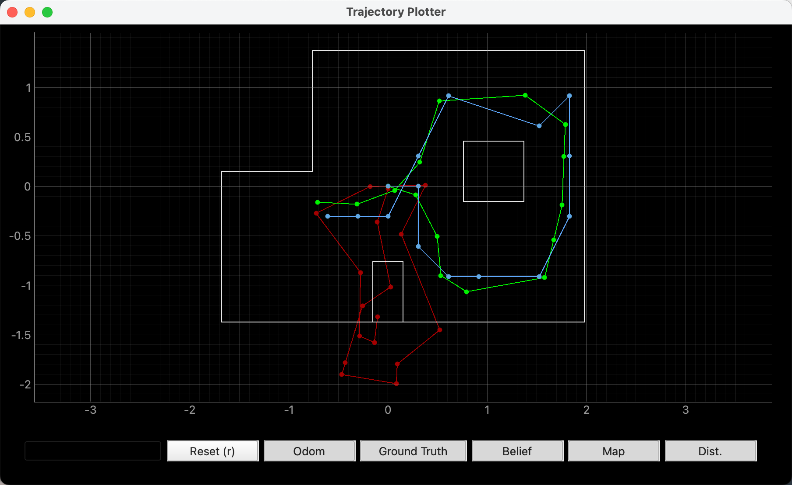
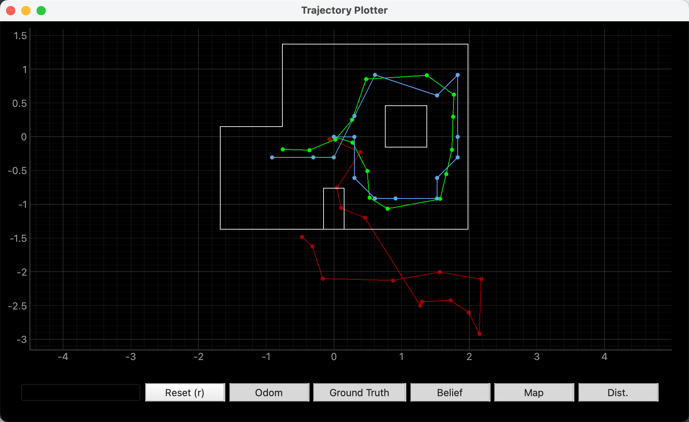
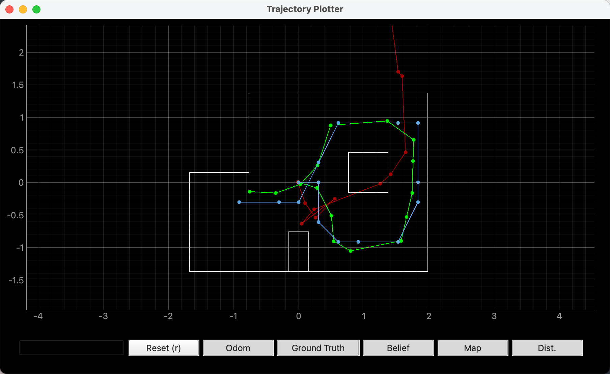

Objective
The purpose of this lab is to implement grid localization using a Bayes filter.
Prelab
Grid localization is a probabilistic method for estimating a robot's position on a discrete grid map. The Bayes filter is a recursive algorithm that updates the belief about the robot's state based on control inputs and sensor measurements. The filter consists of two main steps: prediction and update. In the prediction step, the filter uses the control input to predict the new state distribution. In the update step, it incorporates sensor measurements to refine this distribution, resulting in a more accurate estimate of the robot's position. This lab will implement these steps and evaluate the performance of the localization algorithm.

Lab Tasks
Compute Control
This step extracts the control input from two consecutive odometry poses. The robot motion is decomposed into three components: the first rotation delta_rot_1, the translation delta_trans, and the second rotation delta_rot_2. The translation is computed from the position difference, while the two rotations represent the change in orientation before and after the motion.

def compute_control(cur_pose, prev_pose):
x_prev, y_prev, theta_prev = prev_pose
x_cur, y_cur, theta_cur = cur_pose
dx = x_cur - x_prev
dy = y_cur - y_prev
delta_trans = np.hypot(dx, dy)
delta_rot_1 = np.degrees(np.arctan2(dy, dx)) - theta_prev
delta_rot_2 = theta_cur - theta_prev - delta_rot_1
delta_rot_1 = mapper.normalize_angle(delta_rot_1)
delta_rot_2 = mapper.normalize_angle(delta_rot_2)
return delta_rot_1, delta_trans, delta_rot_2Odom Motion Model
In this step, we compute the probability of transitioning from prev_pose to cur_pose given the control data u. The function first reconstructs the motion from the two poses, then evaluates the consistency between this motion and the odometry input using Gaussian models for rotation and translation. The final transition probability is obtained by multiplying these three components, representing how well the candidate state transition matches the odometry observation.
def odom_motion_model(cur_pose, prev_pose, u):
delta_rot_1, delta_trans, delta_rot_2 = compute_control(cur_pose, prev_pose)
prob_rot_1 = loc.gaussian(delta_rot_1, u[0], loc.odom_rot_sigma)
prob_trans = loc.gaussian(delta_trans, u[1], loc.odom_trans_sigma)
prob_rot_2 = loc.gaussian(delta_rot_2, u[2], loc.odom_rot_sigma)
prob = prob_rot_1 * prob_trans * prob_rot_2
return probPrediction Step
First, the control input u is computed from two consecutive odometry poses. Then, using the previous belief loc.bel and the motion model, the probability distribution is propagated to the new state space, resulting in the predicted belief loc.bel_bar.
Specifically, all possible previous and current states are traversed, and the probabilities are accumulated based on the previous belief and the transition probability given by the odometry motion model. Finally, loc.bel_bar is normalized to ensure it forms a valid probability distribution.
To improve efficiency, only states with bel_prev >= 0.0001 are considered, since smaller values have negligible influence on the current state.
def prediction_step(cur_odom, prev_odom):
u = compute_control(cur_odom, prev_odom)
loc.bel_bar = np.zeros((mapper.MAX_CELLS_X, mapper.MAX_CELLS_Y, mapper.MAX_CELLS_A))
for prev_x in range(mapper.MAX_CELLS_X):
for prev_y in range(mapper.MAX_CELLS_Y):
for prev_theta in range(mapper.MAX_CELLS_A):
bel_prev = loc.bel[prev_x, prev_y, prev_theta]
if bel_prev >= 0.0001:
prev_pose = mapper.from_map(prev_x, prev_y, prev_theta)
for cur_x in range(mapper.MAX_CELLS_X):
for cur_y in range(mapper.MAX_CELLS_Y):
for cur_theta in range(mapper.MAX_CELLS_A):
cur_pose = mapper.from_map(cur_x, cur_y, cur_theta)
prob = odom_motion_model(cur_pose, prev_pose, u)
loc.bel_bar[cur_x, cur_y, cur_theta] += bel_prev * prob
loc.bel_bar /= np.sum(loc.bel_bar)Sensor Model
The function first converts the predicted observation obs at a given map location and the actual observation loc.obs_range_data into arrays. Then, a Gaussian model is applied to measure their similarity, producing a likelihood for each sensor direction. The output is a probability array of length 18, representing the likelihood of each observation at that state.
def sensor_model(obs):
obs = np.asarray(obs).reshape(-1)
obs_range_data = np.asarray(loc.obs_range_data).reshape(-1)
return loc.gaussian(obs, obs_range_data, loc.sensor_sigma)Update Step
In the update step, the algorithm iterates over all candidate states $(x, y, \theta)$. For each state, it obtains the observation obs from the map and computes the observation likelihood using sensor_model(obs).
This likelihood is then multiplied with the prior probability loc.bel_bar from the prediction step to obtain the updated belief loc.bel. Finally, the distribution is normalized so that the total probability sums to 1.
def update_step():
for cur_x in range(mapper.MAX_CELLS_X):
for cur_y in range(mapper.MAX_CELLS_Y):
for cur_theta in range(mapper.MAX_CELLS_A):
obs = mapper.get_views(cur_x, cur_y, cur_theta)
prob_array = sensor_model(obs)
loc.bel[cur_x, cur_y, cur_theta] = loc.bel_bar[cur_x, cur_y, cur_theta] * np.prod(prob_array)
loc.bel /= np.sum(loc.bel)Result
From multiple trajectory executions, the results show that the red curve represents odometry, the green curve represents the ground truth, and the blue distribution represents the belief.




It can be observed that the odometry (red) drifts significantly due to noise, while the belief (blue) remains close to the true trajectory (green), demonstrating that the Bayes filter provides a reliable localization estimate.
Reference
Thanks to Professor Helbling and the TAs for their help during lab sessions. I refer to Wenyi Fu's and Lucca Correia's websites as guidance and as references for web design. I used AI tools to help me with refining the writing and improving the clarity of my report.